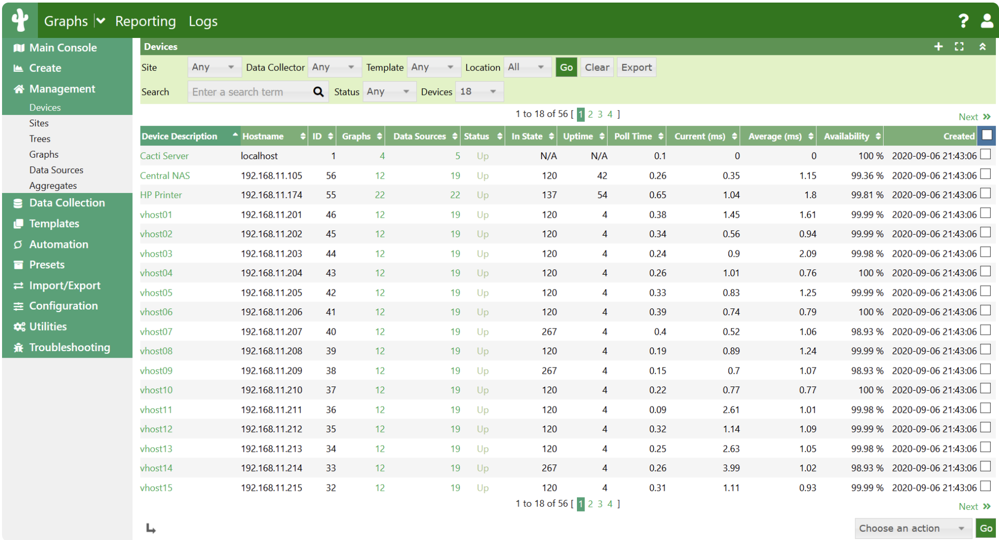
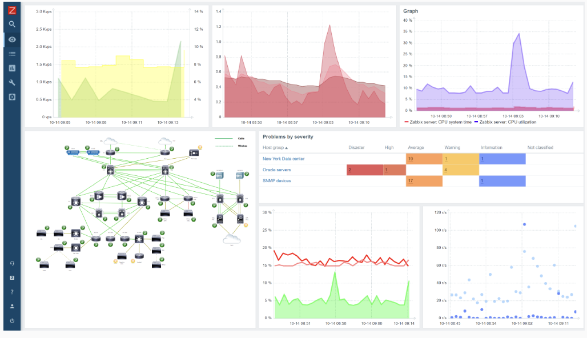
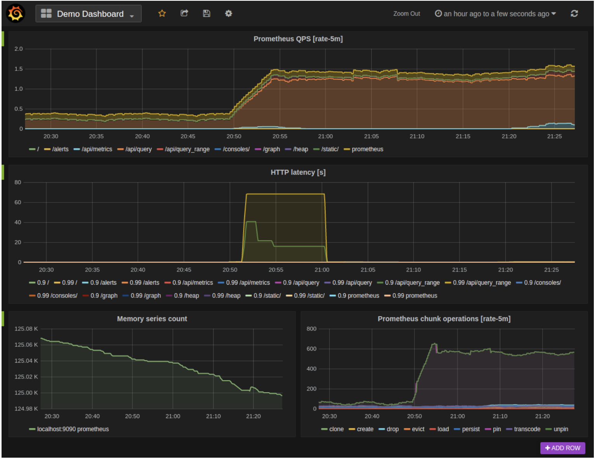
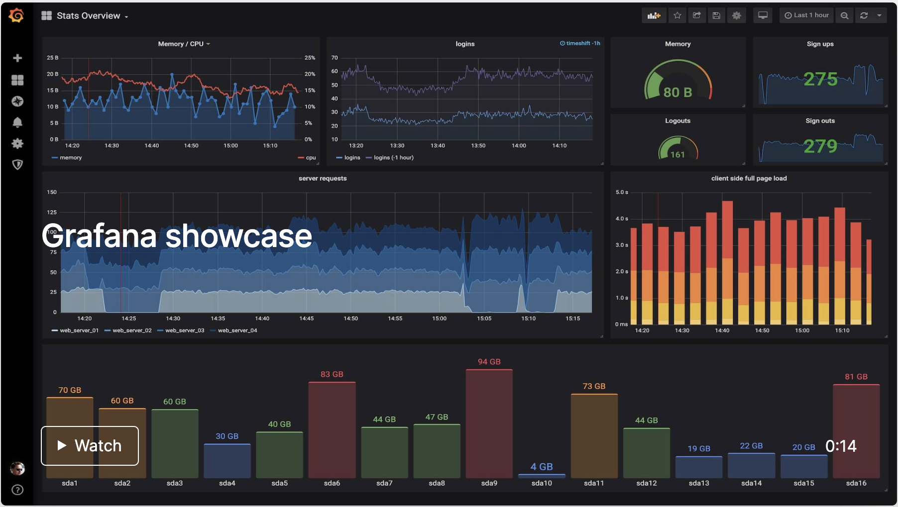

前言
流量监控
- MRTG
- Cacti
- SmokePing
- Graphite
性能告警
- Nagios
- Zabbix
- Zenoss Core
- Ganglia
- OpenTSDB
运维工具篇
Cacti
official link
github
一套基于 PHP、MySQL、SNMP 和 RRDtool开发的网络流量监测图形分析工具。
界面

它通过 snmpget 来获取数据，使用 RRDtool 绘图，但使用者无须了解 RRDtool 复杂的参数。它提供了非常强大的数据和用户管理功能，可以指定每一个用户能查看树状结构、主机设备以及任何一张图，还可以与 LDAP 结合进行用户认证，同时也能自定义模板，在历史数据的展示监控方面，其功能相当不错。
Cacti 通过添加模板，使不同设备的监控添加具有可复用性，并且具备可自定义绘图的功能，具有强大的运算能力（数据的叠加功能）。
Nagios
界面
Nagios 是一个企业级的监控系统，可监控服务的运行状态和网络信息等，并能监视所指定的本地或远程主机参数以及服务，同时提供异常告警通知功能等。
Nagios 可运行在 Linux 和 UNIX 平台上，同时提供一个可选的基于浏览器的Web 界面，以方便系统管理人员查看网络状态、各种系统问题，以及日志等。Nagios 的功能侧重于监控服务的可用性，能及时根据触发条件告警。
目前，Nagios 也占领了一定的市场份额，不过从观察来看，Nagios 并没有与时俱进，已经不能满足于多变的监控需求，架构的扩展性和使用的便捷性有待增强，其高级功能集成在商业版 Nagios XI 中。
Zabbix
界面

Zabbix 是一个分布式监控系统，支持多种采集方式和采集客户端，有专用的 Agent（代理），也可以支持 SNMP、IPMI、JMX、Telnet、SSH 等多种协议，它将采集到的数据存放到数据库，然后对其进行分析整理，达到条件触发告警。
Zabbix 拥有良好的扩展性，同时它的功能十分丰富，可以监控CPU负荷、内存使用、磁盘使用、网络状况、端口监视、日志监视等。
但是因为消耗资源较多的缘故，如果监控的主机非常多时，可能会出现监控超时、告警超时等现象。
Prometheus
界面

Prometheus 作为一个数据监控解决方案，它由一个大型社区支持，有来自700多家公司的6300个贡献者，13500个代码提交和7200个拉取请求。
Prometheus具有以下特性：
- 多维的数据模型（基于时间序列的Key、Value键值对）
- 灵活的查询和聚合语言PromQL
- 提供本地存储和分布式存储
- 通过基于HTTP的Pull模型采集时间序列数据
- 可利用Pushgateway（Prometheus的可选中间件）实现Push模式
- 可通过动态服务发现或静态配置发现目标机器
Grafana
界面：

Grafana 是一款采用 go 语言编写的开源应用，主要用于大规模指标数据的可视化展现。
Grafana支持许多不同的数据源。每个数据源都有一个特定的查询编辑器,该编辑器定制的特性和功能是公开的特定数据来源。官方支持以下数据源:Graphite，Elasticsearch，InfluxDB，Prometheus，Cloudwatch，MySQL 和 OpenTSDB 等。
每个数据源的查询语言和能力都是不同的。你可以把来自多个数据源的数据组合到一个仪表板，但每一个面板被绑定到一个特定的数据源,它就属于一个特定的组织。
每个监控工具的优势和能力都是不同的。你可以根据实际应用需求，选择适合的监控工具。
Nightingale
夜莺监控（ Nightingale ）是一款国产、开源云原生监控分析系统，采用 All-In-One 的设计，集数据采集、可视化、监控告警、数据分析于一体。于2020年3月20日，在 github 上发布 v1 版本，从 v5 版本开始与 Prometheus、VictoriaMetrics、Grafana、Telegraf、Datadog 等生态紧密协同集成，提供开箱即用的企业级监控分析和告警能力，已有众多企业选择将 Prometheus + AlertManager + Grafana 的组合方案升级为使用夜莺监控。
夜莺监控，由滴滴开发和开源，并于 2022年5月11日，捐赠予中国计算机学会开源发展委员会（CCF ODC），为 CCF ODC 成立后接受捐赠的第一个开源项目。夜莺监控的核心开发团队，也是Open-Falcon项目原核心研发人员。
Open-Falcon
Open-Falcon是一款开源的、可扩展的企业级监控解决方案，由小米运维团队发起和维护，曾在小米内部广泛应用，现覆盖小米、美团、快网、滴滴等300多家企业，已经成为国内最流行的监控系统之一。
据了解，Open-Falcon 已经在github上取得了3000+star，数百次fork，数百个pull-request，社区用户超过6000+，超过300家公司都在不同程度使用 Open-Falcon，并且分布在海内外不同地区，如中国大陆、新加坡等。